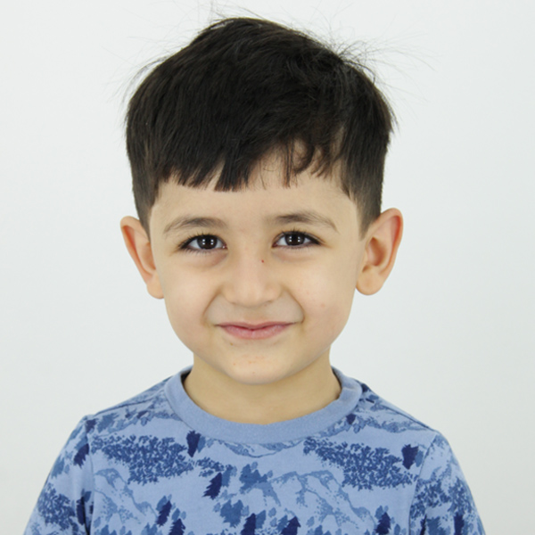
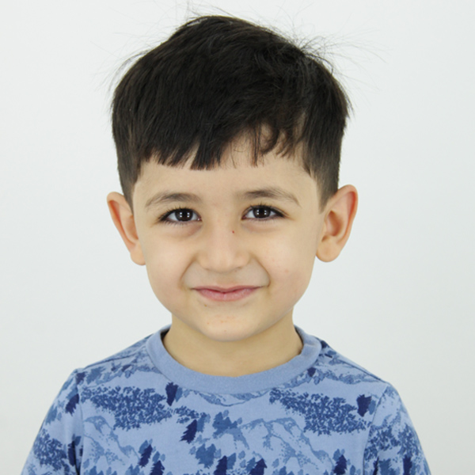

PROFILE
Motivated Sound Engineer/Mixer with solid recording and mixing experience, continually researching new audio techniques and offering a high level of craftsmanship and dedication to customer satisfaction and product quality
SKILLS
Computer skills: Adobe Premier; Da Vinci; Final Cut Pro; Avid; Pro Tools; Nuendo; Cubase; Adobe Audition; Auto CAD; Adobe Photoshop; Adobe Bridge; Adobe Lightroom;
Skills of working with special equipment:
MIXERS / RECORDERS - Sound Devices 833; - Sound Devices 788/722t; - Sound Devices MixPre-6/10 - Zoom f8n Pro
WIRELESS - Lectrosonics DCR822s and SRcs with SSM Micro transmitters (smallest on +the market) - Sennheiser ew 100/500 g2/g3/g4
MICROPHONES - Sennheiser MKH-416 Boom Mic; - Sennheiser MKH-50/60 Boom Mic; - Sanken Cs-3e Boom Mics; - Sanken Css-5 stereo mono Boom Mics;
- Sanken COS-11D Lavalier Mics; - Sennheiser MKE2-Gold Lavalier Mic; - DPA 4066 CORE Omni Headset Mics
TIMECODE - Tentacle Sync TC boxes - Ambient Time Code Slate